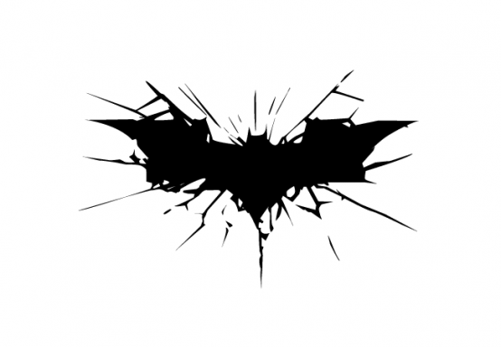
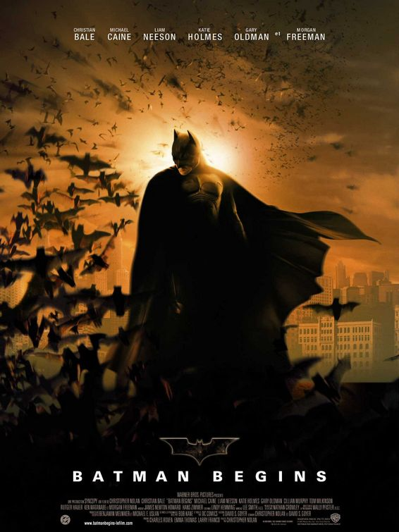
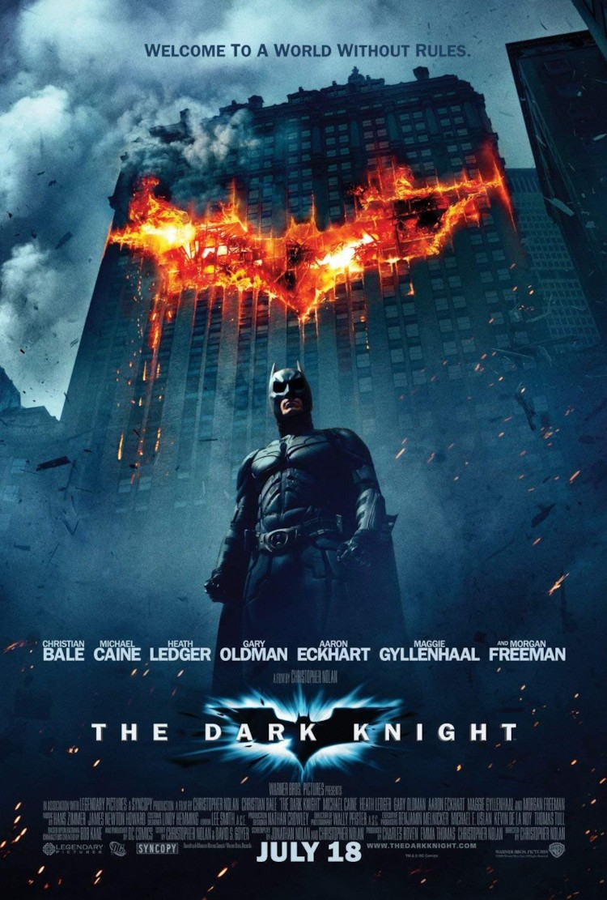
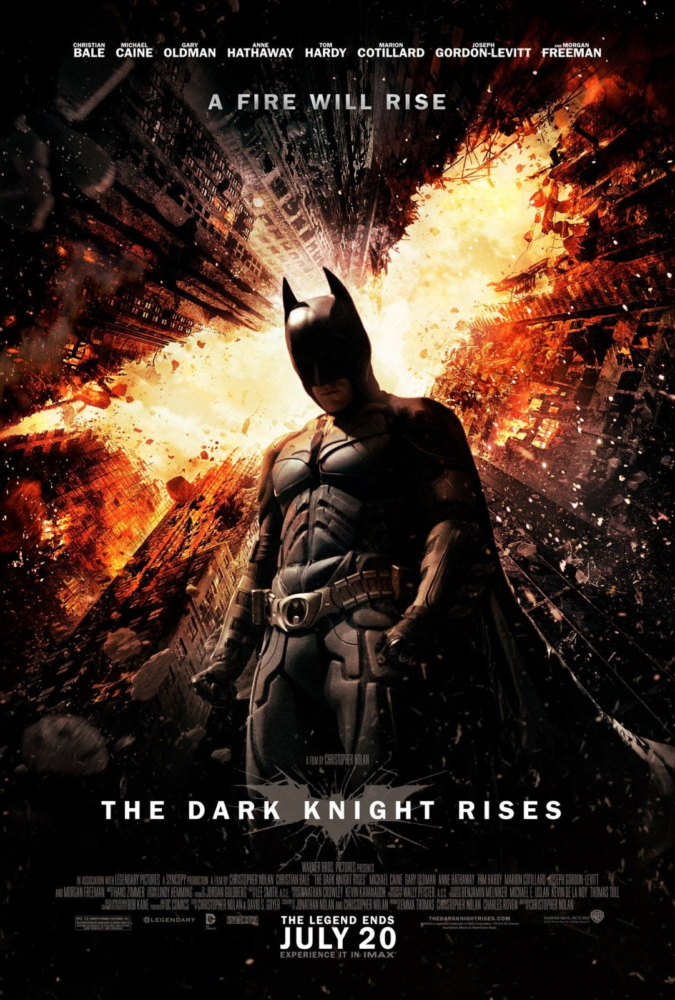

Batman Begins

- 개봉일: 2005년6월24일
- 감독: 크리스토퍼 놀란
- 각본: 크리스토퍼 놀란, 데이비드 S.고이어
- 작곡가: 한스 짐머, 제임스 뉴턴 하워드
The Dark Knight

- 개봉일: 2008년8월6일
- 감독: 크리스토퍼 놀란
- 각본: 크리스토퍼 놀란, 조너선 놀란
- 작곡가: 한스 짐머, 제임스 뉴턴 하워드
The Dark Knight Rises

- 개봉일: 2012년7월19일
- 감독: 크리스토퍼 놀란
- 각본: 크리스토퍼 놀란, 조너선 놀란
- 작곡가: 한스 짐머